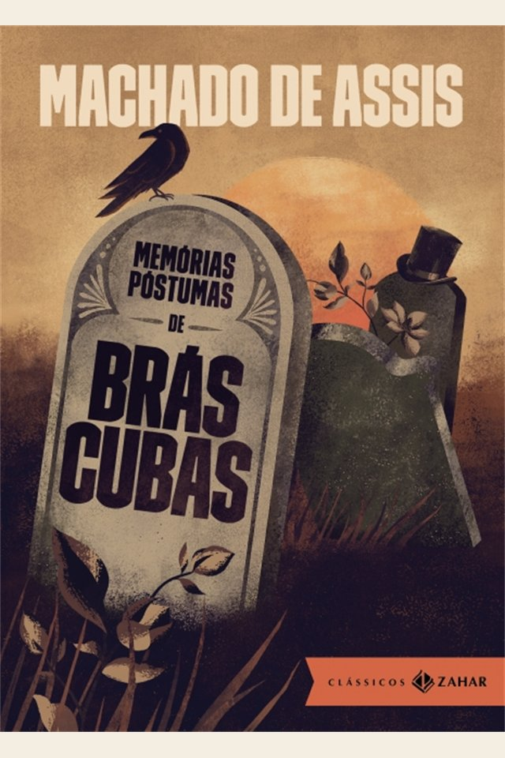

Em uma frase
Brás Cubas, já morto, relembra seus amores, ambições e fracassos sem a necessidade de parecer virtuoso.
Um defunto autor narra a própria vida com ironia, interrompe o leitor e desmonta as aparências da elite brasileira do século XIX.

Publicado em 1881, rompe com a idealização romântica e inaugura uma ficção mais crítica, psicológica e experimental.
Brás Cubas, já morto, relembra seus amores, ambições e fracassos sem a necessidade de parecer virtuoso.
Capítulos curtos, digressões, humor ácido e conversa com o leitor quebram a linearidade tradicional.
O livro expõe vaidade, privilégio, escravidão, interesse e vazio moral nas classes dominantes.
O enredo importa, mas a grande novidade está no modo como Brás Cubas narra e interpreta a própria existência.
Brás Cubas inicia suas memórias depois do enterro. Essa posição permite um tom livre, debochado e sem compromisso com a imagem social.
Filho de família rica, Brás vive protegido por sua posição social. Envolve-se com Marcela, relação marcada por interesse, dinheiro e vaidade.
Brás ama Virgília, mas ela se casa com Lobo Neves por conveniência política. Mais tarde, os dois mantêm uma relação adúltera, sem romper as aparências sociais.
Brás tenta inventar um emplasto que lhe daria glória, mas morre sem realizar grandes feitos. O balanço final é negativo, irônico e crítico.
Os personagens revelam um mundo social movido por aparência, desejo e cálculo.
Defunto autor, vaidoso e irônico. Sua franqueza revela tanto lucidez quanto egoísmo.
Amor de Brás e esposa de Lobo Neves. Representa desejo, conveniência e aparências.
Amigo de Brás e criador do Humanitismo, filosofia satírica.
Relação de juventude de Brás, associada a sedução, dinheiro e desilusão.
Marido de Virgília, ligado à carreira política e à respeitabilidade social.
Jovem abandonada por Brás por preconceito e conveniência.
Machado observa uma sociedade marcada por hierarquias, escravidão e modernização incompleta.
Substitui idealizações por análise crítica das relações sociais e psicológicas.
O amor aparece atravessado por interesse, vaidade e posição social.
A presença de Prudêncio evidencia violências naturalizadas pela sociedade escravista.
O narrador comenta o próprio livro e expõe o artifício literário.
A obra é realista pela crítica à sociedade e pela recusa de finais moralizadores ou idealizados.
É considerada marco inicial do Realismo no Brasil e uma das narrativas mais inovadoras de Machado.
A expressão “defunto autor” resume a inversão central: não é um autor que morreu, mas um morto que escreve.
Foque no narrador, na ironia e na crítica social.